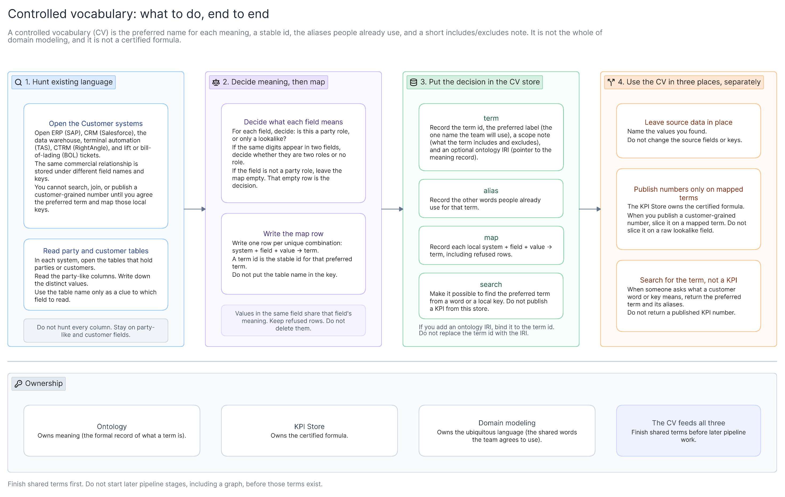

This guide says how a team agrees what its words mean before anyone builds an ontology or publishes a number. A controlled vocabulary records each meaning once, with one preferred label, a stable ID, the aliases people already use and a short scope note. It is not a taxonomy, a thesaurus, an ontology or a knowledge graph, and it does not model the business. Do the language work, then stop.
This guide covers the first of the six stages of the build. The folder's README describes all six and says why they come in that order.
The example is made up. One rack lift for a company called Apex runs through every section. The company, the keys (APEX-PAYER, CONS-4412, 1000123), the tables, the SQL names and the IRIs are invented for this guide. The KPI Store release holds none of these objects.

The KPI Store keeps its own vocabulary in two places.
skos:prefLabel, and can have a skos:definition, a skos:altLabel, a skos:scopeNote and a skos:notation. These hold the preferred label, the aliases, the scope note and a short code. The concept's IRI is its stable ID.business_architecture/domain/business-glossary.md. It gives each term one definition and lists the words to avoid for it.The customer roles are in the party module, business_architecture/ontology/party/. Its list of party roles in code-lists.ttl includes Sold-To, Payer, Bill-To and Loading-Authorized Party, which are four of the meanings the example separates. The method for the ontology itself is the ontology skill in skills/ontology/.
You are on a team that must agree what words mean before anyone builds an ontology or publishes a number. This guide is all you need for that work.
The problem is that people use the same everyday word everywhere, and it has more than one meaning.
One lift. A rack lift for Apex can carry, on one bill of lading:
A screen, a ticket or a warehouse column may call every one of those "customer". Sometimes the same digits show up in two fields. SAP sold_to 1000123 and SAP bill_to 1000123 are two roles. Warehouse customer_id 1000123 does not pick a role.
If you fold those into one "customer", a later number such as the unbilled amount lands on the wrong object. The vocabulary prevents that.
A controlled vocabulary is a curated, finite list of approved terms. Each meaning records four things:
customer can be an alias on two IDs.term_id. A stable ID (id:payer, id:sold-to and so on). Systems join on this. You may bind an IRI to it later. The IRI does not replace term_id.Light usage rules, such as capitalisation and singular or plural, live next to the list. They are not a fifth label.
A controlled vocabulary does not hold local keys. APEX-PAYER and CONS-4412 are in the map, not on the term row.
A controlled vocabulary does not hold the rules of the domain model. It does not decide aggregates, bounded contexts, or whether Ship-To is a place in the model. It names the meaning. Domain modeling still does the modeling, and the vocabulary is one of its tools.
A list of words with no preferred label, aliases, scope note, term_id and method is not a controlled vocabulary.
Read this once, so that the later tables are clear.
| Word | What we mean |
|---|---|
| Meaning | A distinct idea, not the word on the screen. "Customer" is one word. Sold-To and Loading-Authorized Party are two meanings of that word. |
| Word | The string on a screen, a ticket or a column (customer, RG, APEX-PAYER). One word can point at two meanings. |
| Working group | The people who pick the preferred label for a slice of the business (commercial, credit, rack, invoicing). The data team brings evidence. It does not name the meaning. |
| Preferred label | The one approved wording. People read this. |
| Alias | An everyday word or code that maps to a term_id. It does not compete with the preferred label. The same alias can be on two IDs when the word has two meanings. |
term_id |
The stable ID. Aliases and the map join on it. If the label changes later, the ID stays. |
| Local key | The value a system holds for a party or a place, such as APEX-PAYER or 1000123. |
| Map | One row per system, field and local key. The row names the term_id that the key means in that field, or names none. The number is the party. The column is the role. |
| Scope note | What the meaning includes and excludes. It is not the grain of a KPI and not a formula. |
ontology_iri |
A second name for the same meaning, in an ontology file. It does not replace term_id. |
Decide which decisions the vocabulary must support. Name what is out of scope, so that the list does not grow without limit.
The example supports an agreed language for Customer in order-to-cash. With it, a later unbilled amount can be grouped on the right roles, and search can say what a word or a code means.
Out of scope
On the lift. The purpose is to keep sold-to, payer, bill-to, ship-to and loading-authorized party distinct, so that "unbilled for this customer" is a question with one answer. Renaming the lift system's CONS-4412 screen is out of scope.
Start where the language already is. Hunt table names, column names and the values in those columns. Also hunt tickets, screens and reports. Treat every hit as evidence of a meaning, not as an answer. Expect noise.
Free text first. Read ticket subjects, search logs, screen labels and report titles. People type customer, lift customer, paying party.
Then structured data. Read lookup tables, enumerations and dimension values. Extract the distinct values. Count how often each occurs. Read a sample of real rows, so that later choices rest on usage.
On the lift, the hunt finds:
| Where | Table or screen | Column | Value |
|---|---|---|---|
| Lift tickets | ticket row | payer_id |
APEX-PAYER |
| Lift tickets | ticket row | sold_to_id |
APEX-HOU, APEX-DAL |
| Lift tickets | ticket row | bill_to_id |
APEX-BILL |
| Lift tickets | ticket row | terminal_code |
HSC |
| Lift system | lift authorization | lift_customer |
CONS-4412 |
| SAP | partner functions | sold_to |
1000123 |
| SAP | partner functions | bill_to |
1000123 (same digits, different column) |
| Warehouse | dim_customer |
customer_id |
1000123 |
The table name dim_customer is evidence. The column customer_id is evidence. The value 1000123 is evidence. None of them is the preferred label.
Group the hits by meaning, not by the English word.
On the lift, there are five meanings. The names are working names until the working group approves the labels.
| Meaning | What the lift points at | What it is not |
|---|---|---|
| Sold-To | Who the product is sold to (APEX-HOU, SAP sold_to) |
Who pays; who may lift |
| Payer | Who settles the invoice (APEX-PAYER) |
Sold-to; bill-to |
| Bill-To | Who receives the invoice (APEX-BILL) |
Who pays (the two can differ) |
| Ship-To | Where it lifts (HSC) |
A party role |
| Loading-Authorized Party | Who may lift at the rack (CONS-4412) |
Sold-to; payer; site; the card or PIN |
Warehouse customer_id 1000123 does not get its own meaning. The key stands for more than one role. Record it as unresolved.
Do not fold these five into "Customer". That is the problem of one name everywhere.
The working group picks one preferred term for each meaning. It decides from evidence, not from a count of systems:
The SAP partner-function codes (AG or SP, RG or PY) do not win. dim_customer.customer_id does not win.
On the lift, the working group approved:
| Meaning | Preferred label |
|---|---|
| Who the product is sold to | Sold-To |
| Who settles the invoice | Payer |
| Who receives the invoice | Bill-To |
| Where it lifts | Ship-To |
| Who may lift at the rack | Loading-Authorized Party |
Use the same spelling and hyphens everywhere. Do not adopt one system's wording because it is that system's.
Write one or two lines for each preferred label, with what it includes and what it excludes. A later editor and a later model must reach the same decision from the note.
On the lift (cv_term.scope_note):
term_id |
Scope note |
|---|---|
id:payer |
Party that settles the invoice. Not sold-to or bill-to. |
id:sold-to |
Party the product is sold to. Not the payer and not a lift authorization. |
id:bill-to |
Party that receives the invoice. Not who settles it, and not who is entitled to lift. |
id:ship-to |
Delivery site or terminal. Not a party role. |
id:loading-authorized-party |
Who may lift at the rack. Not a payer, not a sold-to, and not a site. |
A scope note does not say which terms a number may be grouped on. In the example, the unbilled amount is grouped on Payer, Sold-To and Ship-To only. Bill-To and Loading-Authorized Party have map rows and still do not group it.
term_idCreate a stable ID for each meaning. Aliases and map rows point at it. Do not replace term_id with an IRI. The IRI is a later addition to the same row.
On the lift, the IDs are:
id:payerid:sold-toid:bill-toid:ship-toid:loading-authorized-partyIf the preferred label later changes from "Payer" to "Invoice payer", the ID stays id:payer.
Record every variant that people and systems already use. Map each variant to exactly one term_id, unless the same string has two meanings. Then write two alias rows.
On the lift, the word customer is an alias on both id:sold-to and id:loading-authorized-party. Search must return both IDs. Never pick one and hide the other.
The SAP partner-function codes (AG, SP, RG, PY, RE, BP, WE, SH) are aliases, not preferred labels. CONS-4412 is an alias of Loading-Authorized Party, and also a local key in the map. site is an alias of Ship-To, not another meaning of Customer.
The map is the agreement between the vocabulary and the systems. Each system keeps its local key. Nobody renames SAP.
Each row holds a local_system, a field and a local_key, and the term_id that the key means in that field. The term_id is empty when the key has no meaning the working group approved.
The same digits in two fields make two rows. SAP sold_to 1000123 maps to id:sold-to. SAP bill_to 1000123 maps to id:bill-to. The number is the party. The column is the role.
Warehouse customer_id 1000123 has no map. Its row has an empty term_id and map_ok = no. The warehouse dimension does not pick a role. Keep the row, because the empty row records the decision.
On the lift, some of the rows:
| System | Field | Local key | term_id |
Mapped |
|---|---|---|---|---|
| Lift tickets | payer_id |
APEX-PAYER |
id:payer |
yes |
| Lift tickets | sold_to_id |
APEX-HOU |
id:sold-to |
yes |
| Lift system | lift_customer |
CONS-4412 |
id:loading-authorized-party |
yes |
| SAP | sold_to |
1000123 |
id:sold-to |
yes |
| SAP | bill_to |
1000123 |
id:bill-to |
yes |
| Warehouse | customer_id |
1000123 |
(empty) | no |
Compare your candidate terms with the language that partners already use. Take what makes a meaning clearer. Keep your own phrasing as an alias when people here use it.
On the lift, the SAP partner functions (sold-to, bill-to, payer, ship-to) and the header fields of a bill of lading (consignee, bill-to, ship-to) confirm the splits the hunt found. They do not become the preferred labels. Do not download a public "Customer" tree and call the hunt done. A general list has no term for who may lift at the rack.
Before you treat the list as approved:
term_id stable.customer and confirm that two IDs come back. Then run the unbilled amount for the Apex payer, and confirm that it is not grouped on CONS-4412 or on warehouse customer_id.A vocabulary that nobody governs grows without limit again.
Two kinds of work stay apart. The working group writes the meaning: the preferred label, the scope note, the term_id, the aliases, and which local keys map. The data team builds the tables and checks them. Neither does the other's part.
The example uses three tables, one search function and one warehouse table that stays as it is. The names are examples.
| Object | What it holds |
|---|---|
cv_term |
term_id, preferred_label, scope_note, ontology_iri. The join key is term_id. On the lift it has five rows. |
cv_alias |
One row per alias and term_id. customer has two rows, for id:sold-to and id:loading-authorized-party. |
cv_map |
local_system, field, local_key, term_id, map_ok, note. Warehouse customer_id 1000123 has an empty term_id. |
cv_lookup(q) |
The search. It matches q against an alias, a preferred label, a term_id or a mapped local key. It does not read dim_customer, returns no amount and rewrites no SQL. |
dim_customer |
The warehouse table with the key that stands for more than one role. One row: customer_id = 1000123. Nobody changes it. |
The IRI on cv_term. When an ontology exists, write each concept's IRI in ontology_iri. The join key stays term_id. These IRIs are made up:
term_id |
ontology_iri |
|---|---|
id:payer |
https://example.org/vocabulary#Payer |
id:sold-to |
https://example.org/vocabulary#SoldTo |
id:bill-to |
https://example.org/vocabulary#BillTo |
id:ship-to |
https://example.org/vocabulary#ShipTo |
id:loading-authorized-party |
https://example.org/vocabulary#LoadingAuthorizedParty |
Writing these IRIs does not build an ontology. It links two names for one meaning.
Why cv_lookup exists. A person or a search tool can ask "what is customer?", "what is APEX-PAYER?" or "what is CONS-4412?". The answer is a preferred label and a term_id. The search returns no amount and rewrites nobody's SQL.
Three uses, kept apart
SELECT customer_id FROM dim_customer still returns 1000123. Nothing renames a source field and nothing intercepts a query.CONS-4412 is not a payer. Warehouse customer_id is not a dimension of that view.customer returns the two IDs and no unbilled amount.How cv_lookup works. A string that you type can be in one of three places. customer is an alias, on two IDs. Payer is a preferred label. APEX-PAYER is a local key in the map, not an alias. A query on cv_term alone misses most of them. So the function searches all three places, then joins back to cv_term for the label and the scope note. If two meanings match, it returns two rows. A search that hides one of them is wrong.
| Source | What it matches | hit_kind |
Example q |
|---|---|---|---|
cv_alias |
alias |
alias |
customer, RG |
cv_term |
The preferred label or the term_id |
label |
Payer, id:payer |
cv_map |
local_key, where term_id is not null |
map_key |
APEX-PAYER, CONS-4412 |
The body of the function, where q is the string to find:
SELECT DISTINCT
t.term_id,
t.preferred_label,
h.hit_kind,
h.hit_value,
t.scope_note
FROM (
SELECT a.term_id, 'alias' AS hit_kind, a.alias AS hit_value
FROM cv_alias a
WHERE lower(a.alias) = lower(q)
UNION ALL
SELECT term.term_id, 'label' AS hit_kind,
CASE
WHEN lower(term.preferred_label) = lower(q) THEN term.preferred_label
ELSE term.term_id
END AS hit_value
FROM cv_term term
WHERE lower(term.preferred_label) = lower(q)
OR lower(term.term_id) = lower(q)
UNION ALL
SELECT m.term_id, 'map_key' AS hit_kind, m.local_key AS hit_value
FROM cv_map m
WHERE m.term_id IS NOT NULL
AND lower(m.local_key) = lower(q)
) h
INNER JOIN cv_term t ON t.term_id = h.term_id
The function returns these columns:
| Column | What it is |
|---|---|
term_id |
The meaning that matched |
preferred_label |
The approved wording, from cv_term |
hit_kind |
How the string matched: alias, label or map_key |
hit_value |
The string that matched |
scope_note |
What the meaning includes and excludes, from cv_term |
Keep the search and the KPIs in separate tools. A tool that answers "what does this word mean?" reads cv_term, cv_alias and cv_map only. It returns a preferred label and a term_id. A tool that answers with amounts reads the certified KPI views only. Do not give the vocabulary tables to the KPI tool, and do not give the KPI views to the search tool.
Checks. These queries show what to check after you build the objects. The catalog and schema names (my_catalog.vocabulary, my_catalog.sales) and the metric view unbilled_usd are examples. MEASURE() is the Databricks function that reads a measure of a metric view.
SELECT term_id, preferred_label, ontology_iri
FROM my_catalog.vocabulary.cv_term
ORDER BY term_id;
SELECT * FROM my_catalog.vocabulary.cv_lookup('customer');
-- expect two IDs: id:sold-to and id:loading-authorized-party
SELECT term_id, preferred_label FROM my_catalog.vocabulary.cv_lookup('RG');
SELECT term_id, preferred_label FROM my_catalog.vocabulary.cv_lookup('APEX-PAYER');
SELECT term_id, preferred_label FROM my_catalog.vocabulary.cv_lookup('CONS-4412');
SELECT local_system, field, local_key, term_id, map_ok, note
FROM my_catalog.vocabulary.cv_map
ORDER BY local_system, field, local_key;
-- expect the warehouse key 1000123 with no term_id
SELECT payer, MEASURE(unbilled_usd)
FROM my_catalog.sales.unbilled_usd
WHERE payer = 'Apex Fuels LLC'
GROUP BY payer;
-- expect one row, grouped on the payer
-- The next two must fail: the view has no such dimension.
SELECT customer_id, MEASURE(unbilled_usd)
FROM my_catalog.sales.unbilled_usd
WHERE customer_id = '1000123'
GROUP BY customer_id;
SELECT loading_authorized_party, MEASURE(unbilled_usd)
FROM my_catalog.sales.unbilled_usd
GROUP BY loading_authorized_party;
SELECT customer_id FROM my_catalog.sales.dim_customer;
-- expect 1000123, unchanged
The vocabulary for a slice of the business is finished when:
term_idterm_id or with noneThen stop.
Do not draw the is-a tree. Do not write a thesaurus of related terms. Do not declare classes beyond the IRI already on cv_term. Do not build a knowledge graph.
The later work (metadata standards, taxonomy, thesaurus, ontology, knowledge graph) uses this language. It also inherits every ambiguity you leave in it.
On the lift, you stop when four things are true. Sold-To, Payer, Bill-To, Ship-To and Loading-Authorized Party are distinct. customer returns two IDs. Warehouse 1000123 has no map. The unbilled amount for the Apex payer is grouped on the payer.
term_id. Record the aliases. Write the map with one row per system, field and local key. The same digits in two fields make two rows. A warehouse key with no role gets an empty row.cv_term, cv_alias, cv_map and cv_lookup. Leave dim_customer as it is.ontology_iri when the ontology exists. Do not replace term_id.